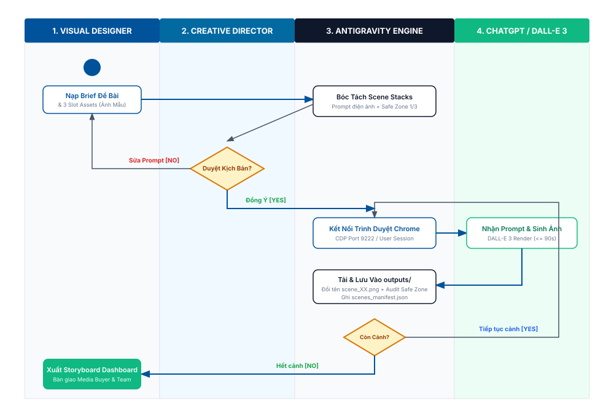

Wintop AI Image Generator & Hybrid Design Autopilot Platform
Tài liệu Yêu cầu Sản phẩm Toàn diện (Software PRD) - Chuẩn Enterprise & Agile
1. Executive Summary & Problem Statement
1.1. Bối cảnh & Điểm nghẽn Thực tế
Thương hiệu Sữa dinh dưỡng Wintop (các dòng sản phẩm chiến lược Wintop Colostrum Gain và Wintop Baby) đối mặt với áp lực sản xuất hàng chục Key Visual và phân cảnh quảng cáo phục vụ các chiến dịch lớn (Trung Thu, Tết, Tăng cân chuẩn khoa học). Hiện tại, quy trình thủ công bộc lộ 3 điểm nghẽn nghiêm trọng:
- Năng suất chậm chạp: Mất từ 2 đến 4 tiếng cho mỗi hình ảnh Key Visual (tìm bối cảnh, ghép nhãn lon, căn chỉnh ánh sáng).
- Vi phạm Safe Zone & Màu thương hiệu: Designer thường xuyên đặt lon sữa hoặc Mascot che lấp khuôn mặt nhân vật, hoặc dùng lệch tone màu nhận diện.
- Mất tính nhất quán nhân vật (Face Inconsistency): Khi triển khai chuỗi 10 - 15 phân cảnh, khuôn mặt nhân vật chính (mẹ công nhân, bé gái) bị biến đổi qua từng cảnh, làm giảm độ tin cậy của chiến dịch.
1.2. Tầm nhìn & Mục tiêu Hệ thống
Hệ thống tự động hóa khép kín kết hợp giữa Antigravity IDE và công cụ AI tạo ảnh trên ChatGPT (DALL-E 3) nhằm đạt 3 mục tiêu cốt lõi: Rút ngắn 85% thời gian (xuống < 60 giây/ảnh); đảm bảo 100% tuân thủ Safe Zone 1/3 và đạt độ tương đồng gương mặt Face Similarity >= 95%; tự động lưu trữ ảnh vào outputs/anh_da_tao/ và xuất bản trang Storyboard Dashboard trực quan.
2. Target Personas & Permission Matrix (RBAC)
| Nhóm Vai Trò | Trách Nhiệm Chính | Nhu Cầu Cốt Lõi | Thách Thức Hiện Tại |
|---|---|---|---|
| Creative Director (CD) | Chỉ đạo nghệ thuật, duyệt kịch bản phân cảnh, chốt xuất bản | Duyệt nhanh chuỗi cảnh, đảm bảo tính thẩm mỹ và chuẩn Safe Zone | Quá tải vì phải duyệt thủ công hàng chục slide kịch bản rời rạc |
| Visual Designer / Operator | Nạp brief, chuẩn bị 3 slot ảnh mẫu, chạy sinh ảnh, kiểm định lỗi | Tự động hóa việc nạp prompt và lưu file, tập trung vào sáng tạo | Mất thời gian copy-paste prompt sang web và tải từng ảnh về đổi tên |
| Media Buyer / Marketer | Tiếp nhận ảnh thành phẩm triển khai chạy quảng cáo đa kênh | Nhận ảnh đúng kích thước (1:1, 9:16, 16:9), đúng hạn chiến dịch | Nhận ảnh sai tỉ lệ, vi phạm khoảng thở UI của TikTok/Reels |
3. Scope & Phasing (P0 / P1 / P2)
| P0: MVP Core (Bắt buộc chạy ngay) | P1: Fast Follow (Tối ưu chuyên sâu) | P2: Future & Growth (Điện ảnh hóa) |
|---|---|---|
|
• Tiếp nhận brief & 3 slot ảnh mẫu • Bóc tách Scene Stacks Prompt điện ảnh • Trạm dừng duyệt kịch bản (Human Checkpoint) • Điều khiển browser GPT tạo ảnh tuần tự • Lưu ảnh tự động vào outputs/anh_da_tao/• Xuất bản Storyboard Dashboard HTML |
• Tự động nâng nét AI 4K / 8K • Tách 4 lớp file PSD bằng AI (SAM) • Tự động Outpainting mở rộng khung hình • Feedback Loop tự học hỏi nghiệp vụ |
• Tự động sinh video chuyển động AI (Google Veo 3 / Sora) • Tự động đăng tải chiến dịch lên Facebook Ads & TikTok Ads Manager |
4. High-Level Architecture & Use Case Diagram
Sơ đồ ca sử dụng tổng quan mô tả ranh giới hệ thống, các tác nhân (Actors) và mối quan hệ nghiệp vụ phân cấp:

5. Functional Specifications & User Flows
5.1. Sơ đồ Hoạt Động Phân Làn (Activity Swimlane)

5.2. Sơ đồ Tuần Tự (Sequence Diagram)
6. Data Model & Entity Relationships
7. System States & Lifecycle
8. Edge Cases, Transaction Integrity & Limits
8.1. Ma trận Xử lý Giao dịch Gián đoạn
| Tình huống Rủi ro | Dữ liệu còn lại trên máy | Cơ chế Khôi phục (Resume) | Cơ chế Dọn dẹp (Cleanup) |
|---|---|---|---|
| Đóng trình duyệt giữa chừng | Các file ảnh đã tải trong outputs/anh_da_tao/ |
Đọc scenes_manifest.json, tự động chạy tiếp từ cảnh dang dở |
Xóa file tải lỗi 0 bytes nếu có |
| Chạm hạn mức tin nhắn GPT | Toàn bộ ảnh trước đó được lưu an toàn | Dừng hàng đợi an toàn, tạo lệnh tiếp tục riêng | Bảo toàn trạng thái manifest |
| Rớt gói tin khi tải file ảnh | File ảnh tải dở chưa trọn vẹn | Thử tải lại URL ảnh tối đa 3 lần cách nhau 5s | Hủy file tải hỏng trước khi ghi đè bản mới |
8.2. Định Mức Số Liệu & Mẫu Câu Chữ
- Timeout: Tối đa 90 giây / ảnh. Thử lại tối đa 1 lần.
- Dung lượng ảnh: 1.5 MB đến 8.0 MB. Định dạng tên file:
scene_{id:02d}_{slug}.png. - Mẫu thông báo thành công: "🎉 CHÚC MỪNG! Đã hoàn tất tạo và lưu trữ [N]/[N] phân cảnh thành công tại outputs/anh_da_tao/! Bảng Storyboard Dashboard đã sẵn sàng."
9. Security, Brand Safety & Quality Audit
- Bảng màu nhận diện: Sắc Xanh dương chủ đạo
#00529B, Vàng kim#F5A623, Nền Canvas#121621. - Quy tắc Safe Zone 1/3: Lon sữa Wintop và Mascot bắt buộc đặt ở 1/3 góc phải hoặc góc dưới, không che mặt nhân vật.
- Đồng bộ ánh sáng (Rim Light & Shadow): Có bóng tiếp xúc (Contact shadow) trên mặt phẳng và ánh sáng ven (Rim light) tương thích với bối cảnh phòng trọ/đêm trăng rằm.
- Kiểm soát giải phẫu bàn tay (5 ngón): Không để phát sinh các lỗi dị tật ngón tay hoặc dính ngón của AI.
10. Success Metrics (KPIs) & Roadmap
| Chỉ số Đo lường | Hiện trạng (Thủ công) | Mục tiêu (Hệ thống Tự động) | Đơn vị |
|---|---|---|---|
| Thời gian sản xuất 1 Key Visual | 240 phút (4 tiếng) | < 1 phút (30s - 60s) | Phút / ảnh |
| Độ tuân thủ Safe Zone 1/3 | ~ 75% | 100% | Tỷ lệ phần trăm |
| Tính nhất quán khuôn mặt (Face ID) | ~ 60% | >= 95% | Điểm Similarity |
| Thời gian duyệt Storyboard | 120 phút (cắt dán slide) | < 30 giây (Dashboard tự động) | Phút / chiến dịch |
11. Tài Liệu Tham Khảo
- Bản đặc tả Brainstorm: BRAINSTORM_SPEC_WINTOP_DESIGN_AUTOPILOT.md
- Bộ quy chuẩn thương hiệu: brand_rules.json
- Kịch bản thực nghiệm Trung Thu V3: Kich ban Trung Thu Wintop V3 mien Bac.xlsx
- Userscript điều phối Google Flow: wintop_google_flow_autopilot.js